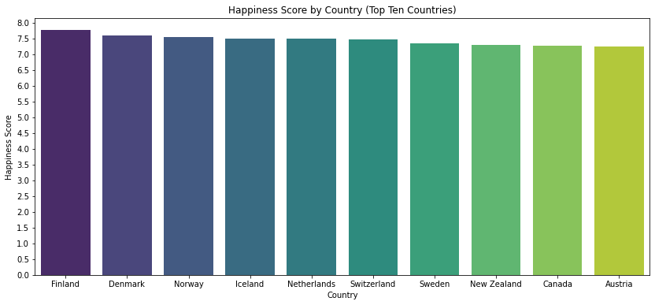
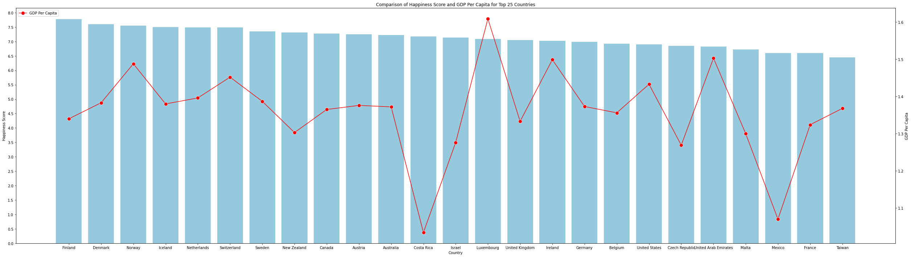
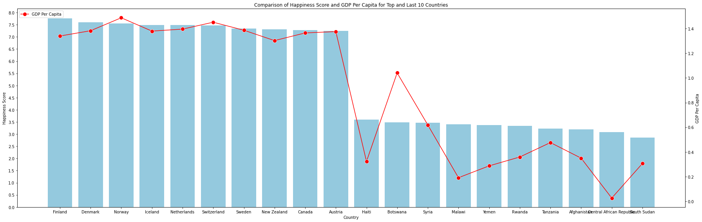
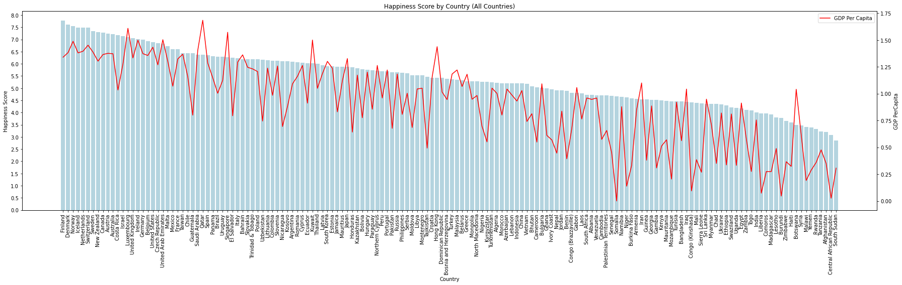

Name: Haider Saleem
In this exploration of the 2019 World Happiness Report dataset, I delved into key questions to unravel insights about global happiness and its relationship with economic indicators. The dataset, obtained from the Kaggle source World Happiness Report Dataset, encompasses information for 156 countries and includes metrics such as "Happiness Score" and "GDP per capita."
I chose this dataset to understand what makes people happy worldwide. It goes beyond just money, looking at things like social support, health, and freedom. This data helps explore the real factors that contribute to the happiness of different countries.
I aimed to identify the happiest countries by analyzing the "Happiness Score." This involved pinpointing locations where people report the highest levels of happiness.
I explored recurring patterns in happiness levels across countries. The goal was to uncover common threads in what makes people happy in different places.
I investigated the correlation between happiness and GDP per capita. The question here was whether a country's wealth, as indicated by GDP per capita, correlates with the happiness of its people.
Importing the libraries
Here, I imported the libraries that I used for the analysis. I used
the pandas library to read the dataset and perform data
manipulation. I used the matplotlib library to create
visualizations and the seaborn library to create a
heatmap.
```python
import pandas as pd # import pandas library
import seaborn as sns # Import the Seaborn library
import matplotlib.pyplot as plt # Import the Matplotlib library
import numpy as np # Import the Numpy libraryImporting the Dataset
Here i read the csv file then loaded the dataset into a variable
called "happiness_data".
happiness_data = pd.read_csv('2019.csv') # read the csv filePrinting the Dataset
Here i printed the dataset to see how many columns and rows are in the dataset and i also printed the first 5 and last 5 rows of the dataset.
```python
print(happiness_data.shape) # shows the number of rows and columns in the dataset
happiness_data # shows the first 5 and last 5 rows of the dataset(156, 9)
| Overall rank | Country or region | Score | GDP per capita | Social support | Healthy life expectancy | Freedom to make life choices | Generosity | Perceptions of corruption | |
|---|---|---|---|---|---|---|---|---|---|
| 0 | 1 | Finland | 7.769 | 1.340 | 1.587 | 0.986 | 0.596 | 0.153 | 0.393 |
| 1 | 2 | Denmark | 7.600 | 1.383 | 1.573 | 0.996 | 0.592 | 0.252 | 0.410 |
| 2 | 3 | Norway | 7.554 | 1.488 | 1.582 | 1.028 | 0.603 | 0.271 | 0.341 |
| 3 | 4 | Iceland | 7.494 | 1.380 | 1.624 | 1.026 | 0.591 | 0.354 | 0.118 |
| 4 | 5 | Netherlands | 7.488 | 1.396 | 1.522 | 0.999 | 0.557 | 0.322 | 0.298 |
| ... | ... | ... | ... | ... | ... | ... | ... | ... | ... |
| 151 | 152 | Rwanda | 3.334 | 0.359 | 0.711 | 0.614 | 0.555 | 0.217 | 0.411 |
| 152 | 153 | Tanzania | 3.231 | 0.476 | 0.885 | 0.499 | 0.417 | 0.276 | 0.147 |
| 153 | 154 | Afghanistan | 3.203 | 0.350 | 0.517 | 0.361 | 0.000 | 0.158 | 0.025 |
| 154 | 155 | Central African Republic | 3.083 | 0.026 | 0.000 | 0.105 | 0.225 | 0.235 | 0.035 |
| 155 | 156 | South Sudan | 2.853 | 0.306 | 0.575 | 0.295 | 0.010 | 0.202 | 0.091 |
156 rows × 9 columns
Data Cleaning
Here i checked for any missing values in the dataset and i also
checked for any duplicate rows in the dataset. I also
dropped some columns because they were not needed for the analysis and
the graphs. I also renamed some columns to make it easier to understand.
and lastly printed the dataset head to see if the changes were made.
```python
happiness_data = happiness_data.drop_duplicates() # drop duplicates
happiness_data.drop(['Generosity', 'Perceptions of corruption', 'Social support', 'Freedom to make life choices', 'Healthy life expectancy'], axis=1, inplace=True) # drop columns
happiness_data.rename(columns={'Country or region': 'Country', 'Score': 'Happiness Score', 'GDP per capita': 'GDP PerCapita'}, inplace=True) # rename columns
happiness_data.head() # show first 5 rows| Overall rank | Country | Happiness Score | GDP PerCapita | |
|---|---|---|---|---|
| 0 | 1 | Finland | 7.769 | 1.340 |
| 1 | 2 | Denmark | 7.600 | 1.383 |
| 2 | 3 | Norway | 7.554 | 1.488 |
| 3 | 4 | Iceland | 7.494 | 1.380 |
| 4 | 5 | Netherlands | 7.488 | 1.396 |
Data description
Here i printed the data description to see the mean, standard deviation, min, max, and the quartiles of the dataset. with these values i can see the range of the data and the spread of the data.
```python
happiness_data.describe().round(3) # summary statistics| Overall rank | Happiness Score | GDP PerCapita | |
|---|---|---|---|
| count | 156.000 | 156.000 | 156.000 |
| mean | 78.500 | 5.407 | 0.905 |
| std | 45.177 | 1.113 | 0.398 |
| min | 1.000 | 2.853 | 0.000 |
| 25% | 39.750 | 4.544 | 0.603 |
| 50% | 78.500 | 5.380 | 0.960 |
| 75% | 117.250 | 6.184 | 1.233 |
| max | 156.000 | 7.769 | 1.684 |
Data Visualization
This code uses Seaborn and Matplotlib to
create a bar plot showing the happiness scores of the top ten countries
from a dataset. It identifies the top countries, filters the data, and
then plots the scores with country names on the x-axis and happiness
scores on the y-axis.
```python
# top ten countries by happiness score
happiness_top_ten = happiness_data.nlargest(10, 'Happiness Score')
# bar plot
plt.figure(figsize=(14, 6))
sns.barplot(x='Country', y='Happiness Score', data=happiness_top_ten, palette='viridis' )
# title and labels
plt.title('Happiness Score by Country (Top Ten Countries)')
plt.xlabel('Country')
plt.ylabel('Happiness Score')
plt.yticks(np.arange(0, 8.5, 0.5)) # goes from 0 to 8 in increments of 0.5
plt.show() # show the plot
Data Visualization with line plot
This code generates a combined bar plot and line plot to compare the
happiness scores and GDP per capita of the top 25 countries from the
given dataset. It first identifies the top 25 countries based on their
happiness scores and then filters the dataset accordingly. The
bar plot, representing happiness scores, while the line
plot is overlaid using a secondary y-axis in red with circular markers.
The code offers a clear visual insight into the relationship between
happiness scores and GDP per capita for the top 25 countries.
```python
#top 25 countries and their happiness score.
top_25_countries = happiness_data.nlargest(25, 'Happiness Score')
# bar plot
plt.figure(figsize=(35, 10))
sns.barplot(x='Country', y='Happiness Score', data=top_25_countries, color='skyblue', label='Happiness Score',)
plt.yticks(np.arange(0, 8.5, 0.5))
# GDP Per Capita Plot
ax2 = plt.gca().twinx()
sns.lineplot(
x='Country',
y='GDP PerCapita',
data=top_25_countries,
color='red',
marker='o',
markersize=10,
label='GDP Per Capita',
ax=ax2
)
#title and labels
plt.title('Comparison of Happiness Score and GDP Per Capita for Top 25 Countries')
plt.xlabel('Country')
plt.legend(loc='upper left')
plt.ylabel('Happiness Score', color='black')
ax2.set_ylabel('GDP Per Capita', color='black')
# Show the plot
plt.tight_layout()
plt.show()
Here i compared the top 10 and last 10 countries with their GDP
perCapita and Happiness Score. I used a bar plot to show
the data. I also used a line plot to show the relationship
between the GDP perCapita and Happiness Score.
```python
# Select the top ten and last ten countries based on Happiness Score
top_countries = happiness_data.nlargest(10, 'Happiness Score')['Country']
last_countries = happiness_data.nsmallest(10, 'Happiness Score')['Country']
top_and_last_countries = pd.concat([top_countries, last_countries])
happiness_top_and_last = happiness_data[happiness_data['Country'].isin(top_and_last_countries)]
#bar plot
plt.figure(figsize=(25, 8))
sns.barplot(
x='Country',
y='Happiness Score',
data=happiness_top_and_last,
color='skyblue',
label='Happiness Score',
)
plt.yticks(np.arange(0, 8.5, 0.5))
# Plot GDP Per Capita
ax2 = plt.gca().twinx()
sns.lineplot(
x='Country',
y='GDP PerCapita',
data=happiness_top_and_last,
color='red',
marker='o',
markersize=10,
label='GDP Per Capita',
ax=ax2
)
#title and labels
plt.title('Comparison of Happiness Score and GDP Per Capita for Top and Last 10 Countries')
plt.xlabel('Country')
plt.legend(loc='upper left')
plt.ylabel('Happiness Score', color='black')
ax2.set_ylabel('GDP Per Capita', color='black')
# Show the plot
plt.tight_layout()
plt.show()
Here i displayed all of the countries using a barplot relative to their happiness score. I also used a line plot to show the relationship between the GDP perCapita and Happiness Score.
```python
# Bar plot for all countries
plt.figure(figsize=(25, 8))
sns.barplot(x='Country', y='Happiness Score', data=happiness_data, color='lightblue', label='Happiness Score',)
plt.xticks(rotation=90) # Rotate x-axis labels for better readability
plt.yticks(np.arange(0, 8.5, 0.5))
# Title and labels
plt.title('Happiness Score by Country (All Countries)')
plt.xlabel('Country')
plt.ylabel('Happiness Score')
ax2 = plt.gca().twinx()
sns.lineplot(
x='Country',
y='GDP PerCapita',
data=happiness_data,
color='red',
label='GDP Per Capita',
ax=ax2
)
# Show the plot
plt.tight_layout()
plt.show()
Discussion
The analysis of the 2019 World Happiness Report dataset revealed some interesting insights. Initially, attention was drawn to the top 10 countries exhibiting the highest happiness scores. Among them, Finland claimed the top spot with an impressive score of 7.769, along with Denmark, Norway, Iceland, Netherlands, Switzerland, Sweden, New Zealand, Canada, and Austria. A deeper exploration of the dataset included investigating the connection between happiness scores and GDP per capita among the top 25 countries. Surprisingly, all these nations showed happiness scores of 7.0 or higher, alongside a solid GDP per capita of 1.0 or above. This combination of high happiness scores and economic strength within the top 25 countries emphasized a significant pattern.
A crucial part of the analysis involved looking closely at the top 10 and bottom 10 countries. This investigation underscored a considerable difference, showing that the top 10 countries had a much higher average GDP per capita at 1.4, while the bottom 10 countries had a lower average of 0.3. This economic difference aligned with happiness scores, as the top 10 countries had a higher happiness score of 7.2, while the bottom 10 countries fell behind at 4.3. In conclusion, the visualizations strongly suggested a positive correlation between GDP per capita and happiness scores. The findings indicated that countries with higher economic prosperity, reflected in superior GDP per capita, tended to report higher happiness scores. Therefore, the analysis strongly backed the idea that, worldwide, having good financial well-being significantly contributes to overall happiness. This helps us understand how money and happiness are connected worldwide, giving us important ideas to think about.
Rerferences